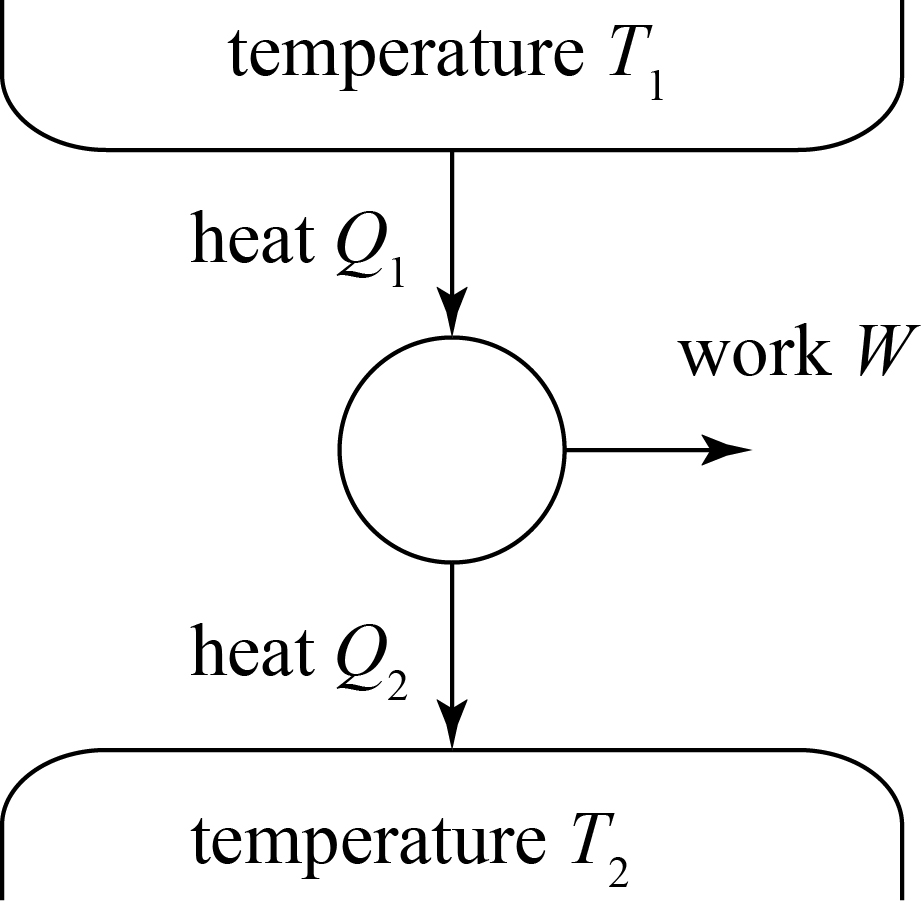
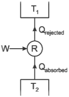

उत्तर -
रसायन विज्ञान की वह शाखा जिसमें रासायनिक एवं भौतिक प्रक्रियाओं के दौरान होने वाले ऊर्जा परिवर्तन का अध्ययन किया जाता है, ऊष्मागतिकी कहलाती है।
उत्तर -
निकाय तथा परिवेश के सम्मिलित रूप को ब्रह्माण्ड (Universe) कहते हैं।
उत्तर -
निकाय के अतिरिक्त ब्रह्माण्ड के शेष भाग को परिवेश (Surroundings) कहते हैं।
उत्तर -
ब्रह्माण्ड का वह निश्चित भाग जिसे ऊष्मागतिकीय अध्ययन के लिए चुना जाता है, निकाय या तंत्र (System) कहलाता है।
उत्तर - ऊष्मागतिकी में निकाय मुख्यतः तीन प्रकार के होते हैं—
1. खुले निकाय (Open System):
इसमें पदार्थ तथा ऊर्जा दोनों का आदान-प्रदान होता है।
उदाहरण - खुले बर्तन में रखा हुआ जल।
2. बंद निकाय (Closed System):
इसमें केवल ऊर्जा का आदान-प्रदान होता है, पदार्थ का नहीं।
उदाहरण - बंद बोतल में रखा हुआ जल।
3. विलगित निकाय (Isolated System):
इसमें न पदार्थ और न ही ऊर्जा का आदान-प्रदान होता है।
उदाहरण - आदर्श थर्मस फ्लास्क।
उत्तर -
किसी निकाय को एक अवस्था से दूसरी अवस्था में परिवर्तित करने की प्रक्रिया को ऊष्मागतिकीय प्रक्रम कहते हैं।
ऊष्मागतिकीय प्रक्रम मुख्यतः निम्नलिखित प्रकार के होते हैं—
\[ \Delta T=0 \]
\[ q=0 \]
\[ \Delta P=0 \]
\[ \Delta V=0 \]
\[ \Delta U=0 \]
| क्र. | समतापी प्रक्रम | रुद्धोष्म प्रक्रम |
|---|---|---|
| 1. | इसमें ताप स्थिर रहता है, $\Delta T = 0$ | इसमें ऊष्मा स्थिर रहती है, $\Delta Q = 0$ |
| 2. | यह प्रक्रम धीरे-धीरे होता है। | यह प्रक्रम तेजी से होता है। |
| 3. | इसमें आंतरिक ऊर्जा स्थिर रहती है, $\Delta U = 0$ | इसमें आंतरिक ऊर्जा बदलती है, $\Delta U \neq 0$ |
| 4. | इसमें $PV = नियतांक$ होता है। | इसमें $PV^{\gamma} = नियतांक$ होता है। |
| 5. | इसकी वक्र का ढाल कम होता है। | इसकी वक्र का ढाल अधिक होता है। |
| उत्क्रमणीय प्रक्रम | अनुत्क्रमणीय प्रक्रम |
|---|---|
| इसे विपरीत दिशा में पूर्णतः वापस किया जा सकता है। | इसे विपरीत दिशा में पूर्णतः वापस नहीं किया जा सकता। |
| यह बहुत धीमी गति से होता है। | यह अपेक्षाकृत तीव्र गति से होता है। |
| प्रणाली प्रत्येक अवस्था में साम्य के निकट रहती है। | प्रणाली साम्यावस्था में नहीं रहती। |
| इसमें ऊर्जा का ह्रास न्यूनतम होता है। | इसमें ऊर्जा का कुछ ह्रास होता है। |
उत्तर -
किसी निकाय में उपस्थित सभी कणों की गतिज तथा स्थितिज ऊर्जाओं के योग को निकाय की आंतरिक ऊर्जा कहते हैं। इसे \(U\) द्वारा प्रदर्शित करते हैं।
उत्तर -
किसी निकाय की प्रारंभिक अवस्था से अंतिम अवस्था में जाने पर उसकी आंतरिक ऊर्जा में होने वाले परिवर्तन को आंतरिक ऊर्जा में परिवर्तन कहते हैं। इसे \(\Delta U\) से प्रदर्शित करते हैं।
एक मोल आदर्श गैस के ताप में ∆T परिवर्तन करने से निकाय की आन्तरिक ऊर्जा में परिवर्तन निम्न होता है।
$dU = -C_v dT$
जहाँ $C_v$ नियत आयतन पर गैस की मोलर विशिष्ट ऊष्मा है।
उत्तर -
ऊर्जा को न तो उत्पन्न किया जा सकता है और न ही नष्ट किया जा सकता है; इसे केवल एक रूप से दूसरे रूप में परिवर्तित किया जा सकता है। यही ऊर्जा संरक्षण का नियम ऊष्मागतिकी का प्रथम नियम कहलाता है।
ऊष्मागतिकी के प्रथम नियम के अनुसार निकाय को दी गई ऊष्मा \(q\), आंतरिक ऊर्जा में परिवर्तन \(\Delta U\) तथा निकाय द्वारा किए गए कार्य \(w\) के रूप में—
\[ q=\Delta U+w \]
यदि निकाय पर कार्य किया जाता है, तो ऊष्मागतिकी का प्रथम नियम इस प्रकार लिखा जाता है—
\[ q=\Delta U-w \]
आदर्श गैस के लिए,
$PV = nRT$
$P = \frac{nRT}{V}$
अतः समतापी प्रक्रम में किया गया कार्य -
$W = \int_{V_1}^{V_2} P \, dV$
$W = \int_{V_1}^{V_2} \frac{nRT}{V} dV$
$W = nRT \int_{V_1}^{V_2} \frac{dV}{V}$
$W = nRT \log_e\frac{V_2}{V_1}$
$W = 2.303 \, nRT \log_{10}\frac{V_2}{V_1}$
हम जानते है कि -
$\gamma = \frac{C_p}{C_v}$
$C_p = \gamma C_v$
मेयर समीकरण से -
$C_p - C_v = R$
$\gamma C_v - C_v = R$
$C_v(\gamma - 1) = R$
$C_v = \frac{R}{\gamma - 1}$
अब रुद्धोष्म प्रक्रम में ऊष्मा का आदान-प्रदान नहीं होता, अर्थात $dQ = 0$ अतः ऊष्मागतिकी के प्रथम नियम से,
$dQ = dU + dW$
$0 = dU + dW$
$dW = -dU$
$dW = -C_v dT$
$dW = -\frac{R}{\gamma - 1} dT$
अतः रुद्धोष्म प्रक्रम में किया गया कुल कार्य -
$W = -\int_{T_1}^{T_2} \frac{R}{\gamma - 1} dT$
$W = -\frac{R}{\gamma - 1} (T_2 - T_1)$
$W = \frac{R}{\gamma - 1} (T_1 - T_2)$
$W = \frac{R}{\gamma - 1}(T_1 - T_2)$
वह युक्ति जो ऊष्मा को यांत्रिक कार्य में बदलती है, ऊष्मा इंजन कहलाती है।
ऊष्मा इंजन के तीन मुख्य भाग होते हैं -

कार्यविधि -सबसे पहले कार्यकारी पदार्थ स्रोत से $Q_1$ ऊष्मा ग्रहण करता है। इसका कुछ भाग वह यांत्रिक कार्य $W$ में बदल देता है और बची हुई ऊष्मा $Q_2$ को वह सिंक को दे देता है। यह क्रिया चक्रीय रूप से चलती रहती है जिससे लगातार कार्य प्राप्त होता है।
किये गये कार्य का मान $W = Q_1 - Q_2$ होता है।
इंजन द्वारा किये गये कुल कार्य और स्रोत से ली गयी कुल ऊष्मा के अनुपात को इंजन की दक्षता कहते हैं। इसे $\eta$ से दर्शाते हैं।
∴ दक्षता η = कृत कार्यली गयी ऊष्मा
माना स्रोत से ली गयी ऊष्मा $Q_1$ और सिंक को दी गयी ऊष्मा $Q_2$ है, तो कृत कार्य $Q_1 - Q_2$
$\eta = \frac{Q_1 - Q_2}{Q_1}$
$\eta = 1 - \frac{Q_2}{Q_1}$
यदि स्रोत का ताप $T_1$ और सिंक का ताप $T_2$ हो, तो $\frac{Q_2}{Q_1} = \frac{T_2}{T_1}$
अतः $\eta = 1 - \frac{T_2}{T_1}$
प्रतिशत में दक्षता $\eta \% = \left(1 - \frac{T_2}{T_1}\right) \times 100$
कार्नो इंजन एक आदर्श उत्क्रमणीय ऊष्मा इंजन है। इसकी दक्षता अधिकतम होती है।
इसके चार भाग होते हैं -
कार्नो चक्र - इसमें चार उत्क्रमणीय प्रक्रम होते हैं -
प्रशीतक - प्रशीतक, ऊष्मा इंजन के विपरीत कार्य करता है। यह ठंडी वस्तु से ऊष्मा लेकर गर्म वस्तु को देता है। इसके लिए इस पर बाह्य कार्य करना पड़ता है।
प्रशीतक के भाग - इसके भी तीन भाग होते हैं -

कार्यविधि -प्रशीतक में कार्यकारी पदार्थ वाष्पक में ठंडी वस्तु से $Q_2$ ऊष्मा अवशोषित करता है, फिर संपीडक द्वारा उस पर बाह्य कार्य $W$ किया जाता है जिससे वह संपीडित होकर संघनित्र में चला जाता है, संघनित्र में वह गर्म स्रोत को $Q_1 = Q_2 + W$ ऊष्मा देकर पुनः द्रव में बदल जाता है और यह चक्र निरंतर चलता रहता है जिससे प्रशीतक के अंदर का ताप कम बना रहता है।
प्रशीतक द्वारा ठंडी वस्तु से ली गई ऊष्मा और उस पर किये गये बाह्य कार्य के अनुपात को कार्य गुणांक कहते हैं। इसे $\beta$ से दर्शाते हैं।
β = ठंडी वस्तु से ली गयी ऊष्मा बाह्य कार्य
माना ठंडी वस्तु (सिंक) से ली गयी ऊष्मा $Q_2$ है और गर्म वस्तु (स्रोत) को दी गयी ऊष्मा $Q_1$ है। अतः प्रशीतक पर किया गया कार्य $Q_1 - Q_2$
$\beta = \frac{Q_2}{Q_1 - Q_2}$
अंश और हर में $Q_1$ का भाग देने पर,
$\beta = \frac{ \frac{Q_2}{Q_1} }{ 1 - \frac{Q_2}{Q_1} }$
चूँकि $\frac{Q_2}{Q_1} = \frac{T_2}{T_1}$ होता है, इसलिए
$\beta = \frac{ \frac{T_2}{T_1} }{ 1 - \frac{T_2}{T_1} }$
$\beta = \frac{T_2}{T_1 - T_2}$
यही प्रशीतक के कार्य गुणांक का सूत्र है।
हम जानते हैं, ऊष्मा इंजन की दक्षता $\eta = 1 - \frac{Q_2}{Q_1}$
$\frac{Q_2}{Q_1} = 1 - \eta$ ........(1)
प्रशीतक का कार्य गुणांक
$\beta = \frac{Q_2}{Q_1 - Q_2}$
$\beta = \frac{1}{\frac{Q_1}{Q_2} - 1}$
$\beta = \frac{1}{\frac{1}{1-\eta} - 1}$ { समी. (1) से
$\beta = \frac{1}{\frac{1 - (1-\eta)}{1-\eta}}$
$\beta = \frac{1-\eta}{\eta}$
यही दक्षता और कार्य गुणांक में सम्बन्ध है। यदि $\eta$ प्रतिशत में हो तो $\beta = \frac{100 - \eta}{\eta}$